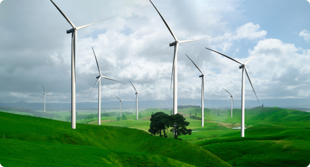
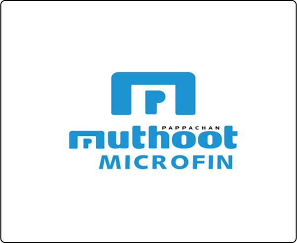

ESG at the Organization
As one of the largest business houses in India, Muthoot Pappachan Group (MPG) realizes that it has a commitment towards the environment and society, which led it to pioneer a whole new energy farming culture.
Wind energy being the most cost-effective resource in India today, MPG had established wind farms in Tamil Nadu as early as 1993. Today, with its manifold farms, the total installed capacity in wind power is 25 megawatts. Significantly, MPG has put plans in place to double its wind power generation capacity.
Comprehensive ESG Policy Document
Muthoot Microfin Limited (“Muthoot”/ “MML”), the microfinance arm of Muthoot Pappachan Group is one of the leading and fast-growing microfinance institutions (NBFC-MFI) in India. The company is focused on providing micro-loans to women entrepreneurs with a focus on rural regions of India. It provides financial assistance through micro loans such as income generating loans to women engaged in small businesses. Delivering financial services to masses including underprivileged and disadvantaged people, living in the rural sectors of the Indian society at affordable terms, in quick turnaround time and with hassle-free processing is the aim of our financial inclusion drive.
Read More Download PDF